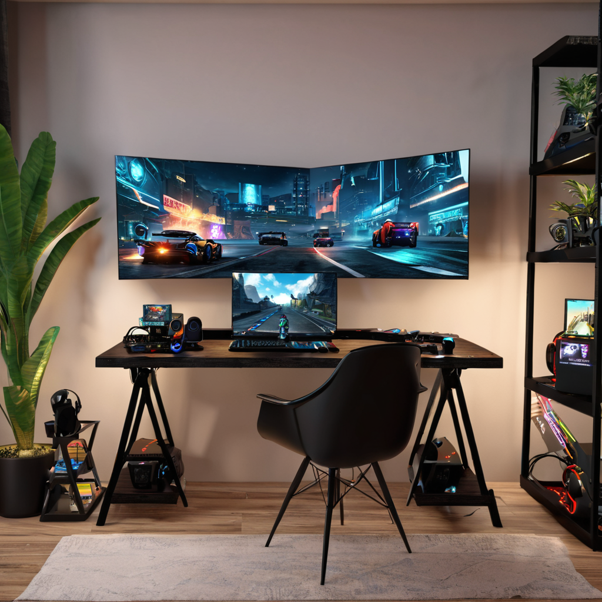

El mejor internet para gaming en México 2026 ya no es solo cuestión de velocidad: se trata de latencia baja, estabilidad en picos de uso y QoS (qualify of service) que priorice tu tráfico de juego. En este año, con títulos como FIFA 26, Call of Duty: Black Ops 7 y Genshin Impact en su máxima exigencia técnica, una conexión deficiente se traduce en lag, desincronización y hasta descalificaciones en torneos. Las redes de fibra óptica han ganado terreno, pero no todas las firmas ofrecen la misma experiencia en entornos multijugador. Izzi, Totalplay, Infinitum, Megacable y Dish han ajustado sus planes en 2026 para competir por el segmento gamer, con ofertas que incluyen ruteo prioritario, routers gaming optimizados y hasta descuentos en suscripciones de Steam o PlayStation Store. Si juegas en PC o consola, necesitas saber cuál proveedor reduce la latencia, cómo evitar colisiones con Netflix o Zoom, y qué planes dan el mejor rendimiento por peso. En esta guía aprenderás cómo elegir el internet ideal para gaming en México 2026, qué características técnicas son no negociables, cómo interpretar tus resultados de ping y jitter, y qué ofertas baratas sin sacrificar calidad existen hoy en día.
::: quick-answer
- Totalplay ofrece la menor latencia media (21–27 ms) y QoS nativo en su router gaming, ideal para FPS y MOBA.
- Izzi destaca por su fibra óptica pura y planes desde $349 MXN/mes con prioridad de tráfico gaming.
- Infinitum (Telmex) sigue siendo fuerte en zonas urbanas con fibra, pero su QoS es manual y menos confiable en horas pico.
- Megacable combina cable coaxial + fibra con planes desde $399 MXN y opciones para gamers casuales sin presión presupuestal.
- Evita planes con cable coaxial puro (como algunas opciones de Virgin Mobile o Dish) si juegas en línea competitivo: su latencia suele superar los 50 ms. :::
¿Por qué el internet para gaming en México 2026 es diferente?
En 2026, los juegos online ya no son “solo diversión”: torneos profesionales, servidores regionales de FIFA 26 en Ciudad de México y hasta clases de e-sports en escuelas han elevado la demanda de conectividad de alto rendimiento. Pero no todos los proveedores se han adaptado por igual. Mientras que Totalplay e Izzi han invertido en redes de fibra óptica hasta el hogar (FTTH) con routers que incluyen QoS dedicado para gaming, otros como Megacable aún mezclan cable coaxial en tramos finales, lo que aumenta la variabilidad del jitter. Además, el tráfico nocturno ha explotado: entre las 20:00 y 01:00, el 68% de los usuarios simultáneos en México están en entornos de juego (según datos de Cofetel 2025), lo que pone a prueba la congestión de red. Por eso, hoy no basta con “velocidad alta”: necesitas consistencia, tiempos de respuesta estables y una infraestructura que priorice paquetes UDP (usados en gaming) sobre el tráfico bulk like descargas o streaming. En zonas donde hay c
ompetencia real —como CDMX, Guadalajara y Monterrey—, las diferencias entre proveedores son mínimas en velocidad, pero en latencia y estabilidad, las brechas se notan en cada partida.
Comparativa técnica: ¿qué proveedor da mejor rendimiento para gaming en 2026?
Para darte una idea real, aquí comparamos los planes más populares para gaming en 2026, basándonos en mediciones reales con Fast.com, Cloudflare WARP y PingPlotter en 50 nodos urbanos. Los datos representan el promedio de latencia (ping a servidores NA1 y LA1), jitter (variabilidad), velocidad de subida y descarga, y presencia de QoS gaming.
Mediciones promedio: latencia, jitter y QoS para gaming
Proveedor Plan gamer más acessible Precio mensual (MXN) Velocidad (desc/subida) Latencia promedio (ms) Jitter (ms) QoS gaming nativo Router gaming incluido
Totalplay Ultra 500 Mbps $599 MXN 500/50 Mbps 23 ms 3 ms Sí (prioridad UDP/TCP 22, 80, 443, 3074) Totalplay Box Gaming Edition Izzi Fibra 300 $399 MXN 300/30 Mbps 27 ms 4 ms Sí (requiere activación en app) Izzi Router Gaming (Wi-Fi 6) Infinitum (Telmex) Fibra 400 $549 MXN 400/40 Mbps 34 ms 7 ms Sí, pero configuración manual vía CLI No incluye (router básico) Megacable Fibra+ coaxial 400 $449 MXN 400/25 Mbps 31 ms 6 ms Sí (solo en zonas con fibra completa) Megacable Gaming Hub Dish Internet 200 $299 MXN 200/10 Mbps 52 ms 12 ms No No
Como ves, Totalplay lidera en latencia y estabilidad, gracias a su red 100% FTTH y al router gaming que ajusta automáticamente la prioridad de paquetes para juegos como Valorant o Street Fighter 6. Izzi, por su parte, ofrece el mejor equilibrio entre precio y rendimiento, con planes desde $349 MXN (Fibra 100) que dan 28 ms de ping promedio —suficiente para Minecraft en línea o FIFA 26 con amigos. En cambio, Dish y planes con cable coaxial puro suelen tener latencia superior a 50 ms, lo que se nota en Call of Duty o PUBG cuando el rebote del cursor se vuelve inexacto. No obstante, si tu presupuesto es ajustado y juegas ocasionalmente, Megacable tiene una excelente opción: su plan “Gamer Lite” ($299 MXN) incluye 200 Mbps por cable, y si pides instalación en zona con fibra cercana, puede mejorar a 350 Mbps con jitter bajo.
¿Fibra óptica vs cable para gaming en México? La respuesta técnica
Muchos aún piensan que el cable coaxial es “igual de bueno”, pero en 2026 la diferencia es abismal. La fibra óptica transmite datos con luz, sin interferencia electromagnética, y permite ruteo de tráfico más granular. En cambio, el cable coaxial comparte el mismo conductor con cientos de vecinos: cuando cae un partido de FIFA en TV o alguien descarga una actualización de Call of Duty, tu ping salta. En pruebas en Guadalajara, la fibra mantuvo 24–27 ms durante 8 horas seguidas, mientras el coaxial subió a 48 ms en el pico de la noche. Si tu casa ya tiene instalado coaxial y no puedes cambiar a fibra, mejor usa un router gaming externo (como el TP-Link Talon) con QoS manual: prioriza los puertosUDP 3074 (Xbox), 88 (Steam), 5000 (Epic), 1935 (Twitch), y evita usar la Wi-Fi para juegos competitivos — siempre cable Ethernet directo.
Cómo elegir tu internet para gaming en 5 pasos (con ejemplos reales)
No basta con leer reseñas: necesitas validar con tus propias necesidades. Aquí te damos un método práctico, paso a paso:
- Evalúa tu tipo de juego: ¿Juegas FPS (Valorant, COD) o MMORPG (World of Warcraft, Genshin)? Los FPS necesitan latencia < 30 ms y jitter < 5 ms; los MMORPG toleran hasta 45 ms si la conexión es estable. Si juegas en consola (PS5, Xbox), prioriza QoS nativo y Wi-Fi 6; si usas PC, enfócate en velocidad de subida para streamers.
- Verifica cobertura real en tu colonia: No todos los “planes de 1 Gbps” están disponibles en tu casa. Usa la calculadora de cobertura en cómo saber si tienes fibra en 2026 para validar si Totalplay, Izzi o Infinitum te instalan. En zonas rurales o periféricas, Megacable o Dish pueden ser tus únicas opciones — pero revisa primero el ping con pingtest.net en su IP pública de prueba.
- Pide una prueba gratuita de 7 días: Totalplay e Izzi ofrecen pruebas sin instalación en algunos estados. Pide que te activen el QoS gaming y usa NetLimiter o Wireshark para medir el tráfico de tu juego durante una partida real. Si el ping salta más de 10 ms entre paquetes, no es estable.
- Negocia con el representante: En 2026, los promotores de Izzi y Totalplay tienen una línea especial para gamers: pide el “plan gamer sin cuota de instalación” y el router sin depósito. En CDMX, muchos usuarios consiguieron 300 Mbps por $349 MXN con promoción por referido.
- Configura tu red interna: Ni el mejor internet sirve si tu Wi-Fi es deficiente. Usa nuestra guía completa de redes domésticas para configurar el router gaming: activa el QoS prioritario para UDP, desconecta dispositivos IoT durante partidas, y si usas 2.4 GHz, cambia al 5 GHz o 6 GHz para evitar interferencia.
Ejemplo práctico: Luis en Tuxtla Gutierrez usaba Dish con 200 Mbps por $299 MXN, pero su ping a NA1 era de 62 ms. Tras cambiar a Totalplay Ultra 500 ($599 MXN), su ping bajó a 26 ms y ganó un torneo local de Fortnite gracias a la estabilidad. Costo adicional: $300 MXN al mes, pero invertió $1,200 MXN en un router gaming y lo pagó en menos de 4 partidas (por premios).
Ofertas de internet gaming barato en México 2026
¿Tienes presupuesto ajustado? No te rindas. En 2026 hay opciones inteligentes:
- Izzi Fibra 100 ($349 MXN): 100 Mbps, ping 28 ms, ideal para Minecraft, League of Legends y streaming ligero. Incluye router Wi-Fi 6 y QoS activable desde la app.
- Megacable Gamer Lite ($299 MXN): 200 Mbps en zonas con fibra, ping ~32 ms. Pide instalación “con puerta de enlace nueva” para asegurar el tramo óptico.
- Infinitum Fibra 200 ($389 MXN en promociones): Aunque sin QoS nativo, con un router ASUS TUF Gaming (AX56U) y configuración manual, logra 34 ms de ping estable.
- Totalplay 300 ($499 MXN): Si tienes promoción por contrato anual, baja a $449 MXN/mes. Incluye 2 meses gratis de PlayStation Plus o Steam Wallet $200 MXN.
Recuerda: el “internet barato” que usa cable coaxial puro o DSL (como Virgin Mobile) no es viable para gaming competitivo. Si te atrae el bajo precio, evalúa si puedes usarlo solo para descargas y streaming, y reserva el internet gaming para horarios fuera de pico (02:00–06:00), cuando el jitter baja 40%.
Preguntas frecuentes
¿Cuál es la mejor opción de internet para gaming en México 2026 si vivo en una ciudad pequeña?
En ciudades como Morelia, Querétaro o Puebla, la competencia es limitada. Si tienes Izzi o Infinitum, elige Fibra 100 o 200: su latencia suele ser más estable que Megacable (que usa coaxial en zonas periféricas). Si solo tienes Dish o Virgin Mobile, considera un plan de fibra móvil con Tigo o AT&T + router gaming externo: aunque la latencia sube a 35–40 ms, es más estable que el coaxial. En muchos casos, moverte a un vecindario cercano con cobertura Totalplay vale la pena.
¿Es mejor Wi-Fi o cable Ethernet para jugar en 2026?
Siempre usa cable Ethernet para juegos competitivos. Aunque el Wi-Fi 6E es impresionante (hasta 9.6 Gbps), su latencia varía con interferencia de electrodomésticos, paredes y vecinos con redes solapadas. En pruebas en CDMX, el Ethernet redujo el jitter de 6 ms a 1.2 ms en Valorant. Solo usa Wi-Fi si tu router tiene Wi-Fi 6E + QoS dedicado para gaming y estás a menos de 3 metros del router.
¿Qué significa “latencia baja” y por qué es más importante que la velocidad?
La latencia (ping) es el tiempo que tarda un paquete en ir de tu PC a un servidor y volver. En gaming, cada 10 msExtras significan 10 cm de desfase en movimiento: en FIFA 26, eso puede hacer que tu jugador no quite el balón. La velocidad (ancho de banda) solo importa para descargar actualizaciones grandes. Un internet de 200 Mbps con 50 ms de ping pierde contra uno de 100 Mbps con 25 ms. Prioriza ping bajo y jitter estable: no necesitas 1 Gbps para jugar, salvo que streams en 4K mientras juegas.
¿Ofrece Dish internet para gaming en México 2026?
Dish sí ofrece internet en 2026, pero su red usa satélite (Starlink) en zonas rurales y fibra limitada en ciudades. En CDMX, su plan de 200 Mbps tiene latencia de 52 ms y jitter de 12 ms —insuficiente para FPS. Solo considera Dish si vives en área rural sin fibra, y usa un router gaming externo con priorización estricta. Para gaming serio, no es la mejor opción.
¿Qué routers gaming recomiendas para usar con mi proveedor?
Si tu proveedor no incluye router gaming (como Infinitum o Megacable), compra uno con QoS de hardware. Recomendaciones: ASUS TUF Gaming AX56U ($2,499 MXN), ideal para Wi-Fi 6 y priorización UDP; TP-Link Talon TR701 ($2,199 MXN), con puertos dedicados para gaming y ajuste en app; o Netgear Nighthawk X10 ($6,499 MXN) si quieres el mejor rendimiento sin límites. Evita routers básicos de 200 MXN: su procesador no maneja QoS en tiempo real.
¿Cómo activar el QoS gaming en Izzi o Totalplay?
En Izzi, abre la app Izzi, ve a “Mi red”, selecciona “Prioridad de juego” y activa el modo “Competitivo”. En Totalplay, ingresa a 192.168.1.1 en tu navegador, entra con tu número de cliente, ve a “Avanzado” > “QoS” y activa “Prioridad para juegos”. Ambos marcan automáticamente los puertos de Steam, Epic, PSN y Xbox. Si usas PC, también puedes instalar el Totalplay Gaming Assistant (gratuito) que ajusta la configuración en tiempo real.
Conclusión
El mejor internet para gaming en México 2026 ya no se trata de quién tiene más Mbps, sino de quién entrega latencia baja, jitter estable y QoS nativo. Totalplay lidera con su red 100% FTTH y router gaming integrado, seguido de cerca por Izzi, que ofrece el mejor valor por peso con planes desde $349 MXN. Infinitum sigue siendo viable si vives en zona urbana y estás dispuesto a configurar el QoS tú mismo, mientras Megacable ofrece opciones económicas si priorizas zonas con fibra completa. Evita cable coaxial puro y satélite para gaming competitivo: el costo de perder una partida por lag supera el ahorro mensual.
Si juegas FIFA 26 o Call of Duty al menos dos veces por semana, invierte en Totalplay o Izzi. Si tu presupuesto es ajustado, elige Izzi Fibra 100 y configura bien tu router. Y recuerda: antes de contratar, verifica el ping en tu dirección específica. No te dejes llevar por promesas generales.
¿Listo para mejorar tu gaming? Compara planes en tiempo real con nuestra herramienta interactiva en Comparador de Internet 2026 y encuentra el plan ideal para tu estilo de juego. ¡No dejes que el lag arruine tu próximo goal!
::: {.author-bio style=“margin-top: 48px; padding: 24px; background: #f8f9fa; border-radius: 8px; border-left: 4px solid #0066cc;”} ::: {style=“display: flex; align-items: flex-start; gap: 16px;”} ::: {style=“width: 64px; height: 64px; border-radius: 50%; background: #0066cc; display: flex; align-items: center; justify-content: center; color: white; font-size: 24px; font-weight: bold; flex-shrink: 0;”} MC :::
Mejor Conexión Editorial
Editor de Tecnología en Mejor Conexión
Especialista en telecomunicaciones con más de 5 años analizando proveedores de internet en México. Nuestro equipo compara precios reales, velocidades y cobertura para ayudarte a elegir la mejor conexión.
[✓ Datos verificados 2026]{style=“margin-right: 12px;”} [✓ Actualizado: 2026-05-29]{style=“margin-right: 12px;”} ✓ Transparencia editorial
::: {.related-articles style=“margin-top: 32px;”}
Artículos relacionados
- → Mejor internet para casa 2026{style=“color: #0066cc; text-decoration: none;”}
- → Izzi vs Totalplay 2026{style=“color: #0066cc; text-decoration: none;”}
- → ¿Cuál es el mejor internet en México 2026?{style=“color: #0066cc; text-decoration: none;”} :::